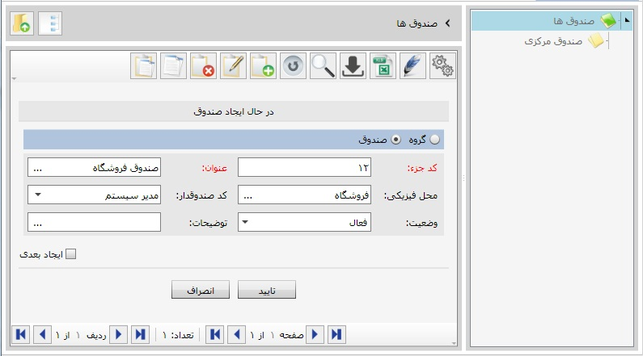
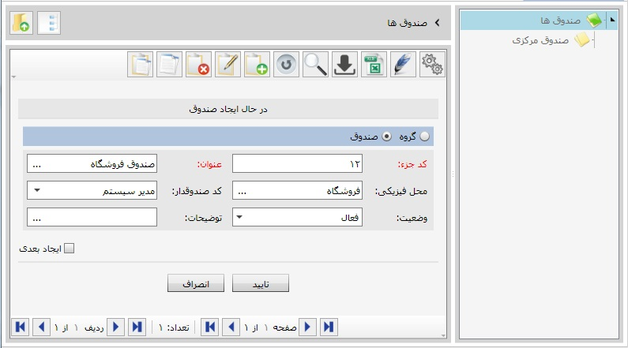
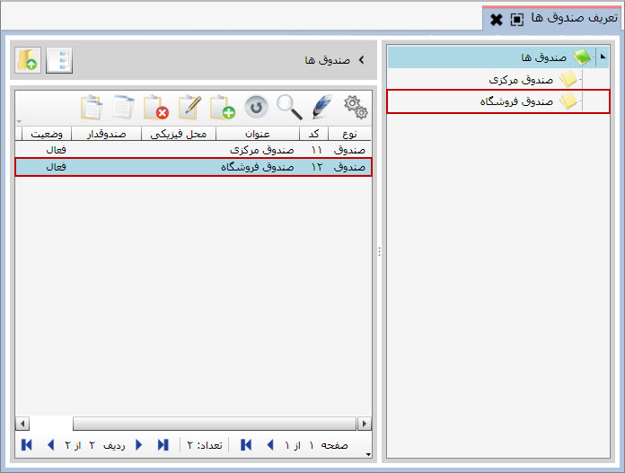

برای تعریف صندوق ها مانند تعریف حساب های بانکی عمل کنید. ابتدا روی گزینه تعریف صندوق ها از منوی نرم افزار کلیک کرده بعد از باز شدن صفحه مربوط به آن برای تعریف گروه صندوق ها یا تعریف خود صندوق به طور مستقیم عمل نمایید. در اینجا تعریف صندوق «صندوق مرکزی» بدون گروه بندی صورت گرفته است:
 

پس از تایید، صندوق تعریف شده به لیست صندوق ها افزوده می شود.
